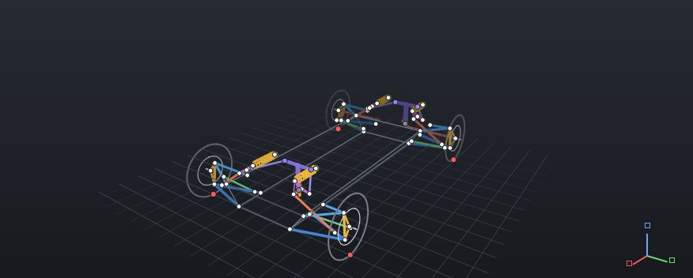
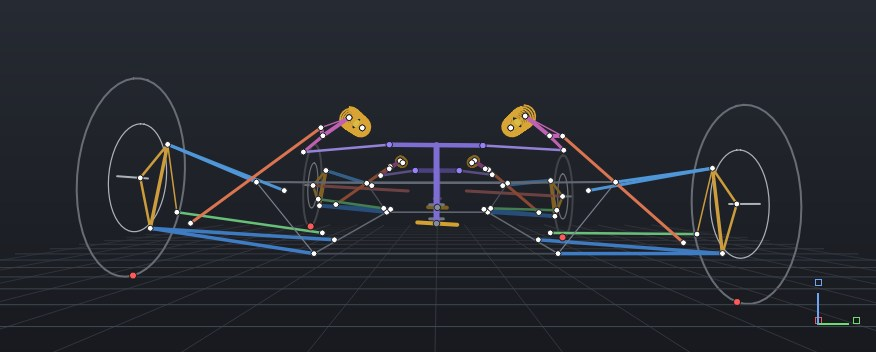

01 · Car
Engineer the car before it touches the track.
One connected engineering model for vehicle development — from suspension hardpoints to the circuit, the simulator and back.
Scroll to go inside the car
02 · Geometry
Every number here was calculated.
Move the suspension and the geometry answers. Camber, toe, castor, KPI, scrub, trail, roll centre and motion ratio are measured off the solved 3-D mechanism — never typed in.
YHF's own example F1000 geometry, solved live in your browser with a port of YHF's double-wishbone method.
03 · Dynamics
Geometry drives the dynamics.
A hardpoint changes the vehicle: wheel rate, ride frequency, roll stiffness and how it is shared front to rear. Follow the load path from the tyre, through the links, to the spring.
Steady right-hand turn at 1.2 g. Roll is drawn ×3 so you can see it; the values are not scaled.
04 · Optimisation
Don't guess. Optimise.
Select the variables, the constraints and the target. YHF evaluates candidate configurations against the objective — and the result is built and checked on the real mechanism.
A one-variable bump-steer problem, run on this page by golden-section search. YHF's optimisation handles many variables, constraints and targets.
05 · Control
Control the response.
PID and LQR controller workflows and rear-wheel steering, developed on the same vehicle model — and exported.
Linear single-track model with a PID yaw-rate controller on rear steer, computed on this page. Wheel angles drawn ×6.
06 · Equations
Not a black box.
Every result can be traced to where it came from. The Open Equations Bar shows the relationship behind an output, the variables it used and what depends on it.
One relationship, followed live on this page's demonstrator: the linkage sets the motion ratio; the motion ratio sets what the tyre feels.
07 · Track
We designed it. Now see what it does.
Track studies put the vehicle model on a circuit: lap-time analysis, vehicle-state channels around the lap, and setup comparison between configurations.
A procedural demonstration layout and the website's own quasi-steady-state estimate — not YHF's lap simulation, not a real circuit. Line, path, heading and trace all come from one racing line.
08 · Simulation
Simulator export.
With the optional Export Pack, the engineering model becomes a simulator vehicle, so a driver can evaluate what the analysis predicted — and their feedback goes back into the design.
Currently supports Assetto Corsa.
09 · Learn
Software that teaches the engineering.
The Learning Tab explains what a quantity is, why it matters, the maths behind it and what happens when you change it — with practice questions. The Help Me Guide tells a working engineer what a setting affects and where to look next.
10 · YHF
One connected model.
From geometry to dynamics to optimisation to the track — and back again.
11 · What YHF is
Vehicle development in one engineering model.
YHF is a Windows desktop application. Suspension geometry, kinematics, dynamics, stiffness and strength, optimisation, controls, track studies and optional simulator export share one model: move a hardpoint and everything downstream moves with it.
- 01DefineRequirements and hardpoints. Geometry can be generated from targets.
- 02SolveThe 3-D mechanism through bump, rebound and steer.
- 03MeasureAlignment, roll centre, motion ratio, wheel rate — calculated.
- 04StiffenSprings, bars, roll stiffness; member loads and strength.
- 05OptimiseVariables, constraints, objectives; candidate configurations.
- 06DriveDynamics, track studies, controls, optional simulator export.
- 07IterateDriver feedback and results go back into the design.
12 · The application
The film shows the idea. This is the software.
Captured from YHF's 3-D viewport with its example F1000 vehicle: hardpoints, wishbones, pushrods, bell cranks, coilovers and anti-roll bars, solved as one car.


Full application captures of each workspace are being prepared. See what each one will show.
13 · Engineering credibility
Built so a result can be defended.
Calculated, never typed
No box for a result.
Motion ratio, roll centre, camber gain and anti-dive are outputs of the mechanism. Inputs are stored; results are measured.
True 3-D
Real pivot axes.
Wishbones rotate about their actual chassis axes, so canted pivots are exact. Instant centres come from point velocities, not line drawings.
Traceable
Open equations.
Outputs show the relationship, variables and assumptions behind them. Open means inspectable — not open source.
Tested
Over 3,700 automated tests.
Solvers run headless and are regression-tested. Validation against physical test data is published separately, when it exists.
14 · Who it's for
Four ways in.
Motorsport
Race and vehicle-dynamics engineers
Geometry through lap time on one model, with the equations in view.
Engineering detail →Formula Student
Teams, not just students
A five-user team licence: suspension, dynamics and optimisation for the whole team.
For teams →Education
Universities and lecturers
The Learning Tab edition — software only, or a turnkey simulator system for the lab.
Education →Industrial
Professional engineering groups
A 100-user licence group with the Help Me Guide for contextual engineering guidance.
Licensing →15 · Next step
Start with a conversation.
- Tell us about the workThe car or course, the team, what you need to solve.
- EvaluationTime-limited evaluation licences are available on request.
- QuotationFor your licence group, edition and any Export Pack.
- Written termsTerm, users and permitted use confirmed with the licence.